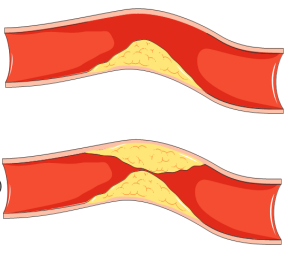
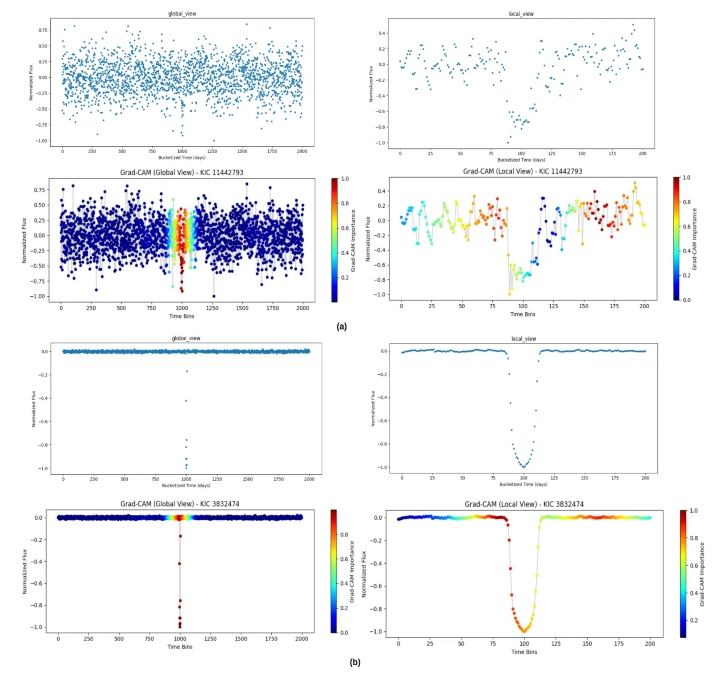
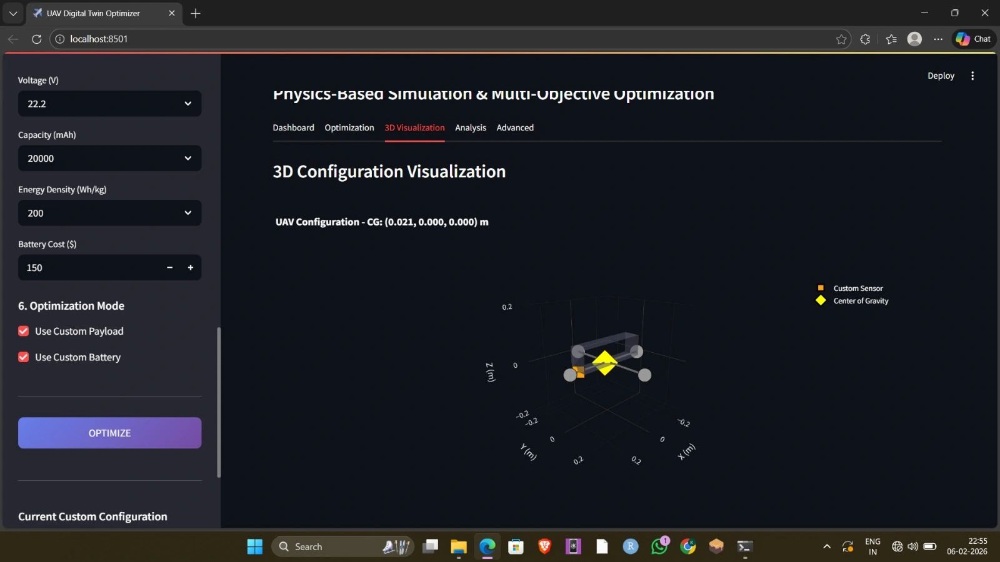
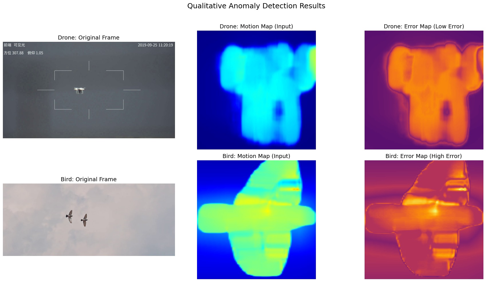
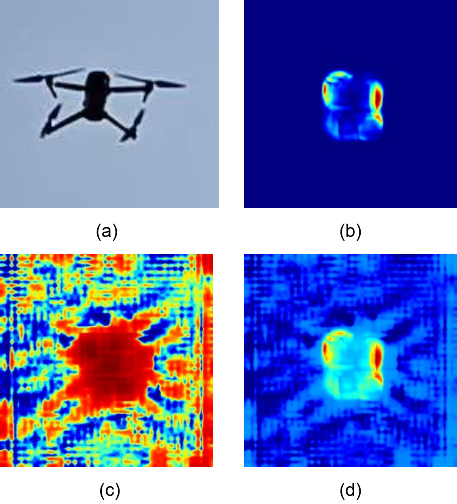
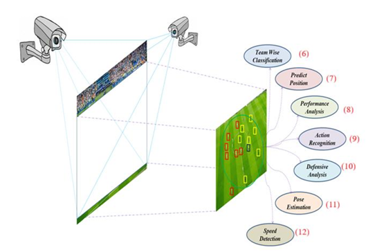

Ongoing work at IIT Kharagpur exploring molecular communication and targeted drug delivery through three-dimensional Brownian motion and Monte Carlo-based stochastic simulation.

Interpretable dual-view DenseNet-BiLSTM architecture for exoplanet transit detection from photometric time-series data, incorporating temporal modeling and Grad-CAM-based interpretation.

Digital-twin modeling of dynamic physical systems using physics-based simulation, sensor data, and computational state monitoring.

Real-time UAV tracking and behavior anomaly detection using YOLOv8 and ConvLSTM-based spatiotemporal modeling, achieving 0.944 AUROC.

Resource-efficient spatiotemporal modeling for UAV surveillance and intent recognition on NVIDIA Jetson edge computing platforms.

Computer-vision-based system for monitoring soccer player movements and analyzing performance using neural-network methods.